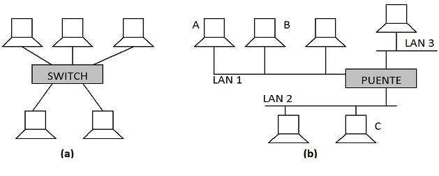

4. Dispositivos de interconexión a nivel de enlace
Importante
Recuerda que la función principal del nivel de enlace (nivel 2) es asegurar un intercambio de datos fiable entre dos elementos de red conectados a través de un medio de transmisión.
En una red, los dispositivos de interconexión más comunes son los siguientes:
- Repetidor. Este tipo de elementos de red son necesarios en redes que han crecido tanto que es necesario regenerar la señal eléctrica que viene por el cable para que pueda ser reconocida por todos los elementos de red que estén conectados al medio. En teoría, un repetidor no hace nada y se puede considerar como una extensión del cable (no añade ninguna información ni la quita). Realmente, no es transparente e introduce un inevitable retardo. Es por este motivo, por el que está limitado a 4 el número máximo de repetidores que puede haber en un segmento de una red Ethernet.
- Concentrador: Un concentrador o hub es un dispositivo con una serie de puertos ethernet a los que es posible conectar ordenadores. Cuando un PC envía una trama por un puerto, el concentrador la reenvía por todos los demás por lo que se comporta igual que un bus. Por tanto, en un concentrador todo aquello que se conecta pertenece al mismo dominio de colisión, donde es posible que dos ordenadores se interfieran. No hace nada con las tramas, no regenera la señal, ni la amplifica.
- Conmutador o switch. Un switch y un hub se puede decir que son muy parecidos y aparentemente realizan la misma función. Realmente, hay una diferencia radical entre ambos casos, ya que en una LAN con un concentrador, cuando un PC escribe en su cable, el hub reenvía esa información por todos los demás puertos. La red se comporta como si hubiera solo un cable al que todos los ordenadores están conectados, mientras que en el caso del switch con “n” puertos, se comporta como “n” redes independientes en la que cada red tiene un solo PC, por tanto, hay “n” dominios de colisión. En un switch, si una computadora A quiere hablar con otra B, la trama no se reenvía a todos los puertos del switch sino solo al puerto donde se encuentra la computadora B.
- Puente: Los puentes o bridge aparecen debido a la necesidad de conectar varias LAN. Con un puente todavía la distancia puede aumentar aún más cuando se desean conectar dos redes independientes que pueden ser colocalizadas o distantes.
- Router: Los enrutadores o router hacen una función parecida a la de un puente, pero trabaja en un nivel distinto. Un puente trabaja con la trama (capa 2 de OSI), mientras que un enrutador trabaja con el paquete de nivel de red.
Respecto a las capas de OSI, un concentrador y un repetidor pertenecen al nivel 1 o nivel físico. En cambio, los puentes y conmutadores se encuentran en el nivel de enlace o nivel 2. En un puente, es posible conectar LAN directamente a un puerto. En cambio, con un switch normalmente se suele conectar solo una computadora a un puerto del mismo.
Un router tiene dos funciones importantes. Una de ellas es la función de enrutamiento que consiste en construir las tablas para ello. Al igual que se ha visto para los puentes, cuando se alimenta a un router, tienen que aprender a enrutar los paquetes y así construir sus tablas. La otra función que tiene es la de reenvío en la que, una vez que ya tiene sus tablas completas, si llega un paquete de A hacia B, el router examina la dirección B va a sus tablas de enrutamiento y decide la interfaz por el que debe enviar el paquete.

Imagen de elaboración propia